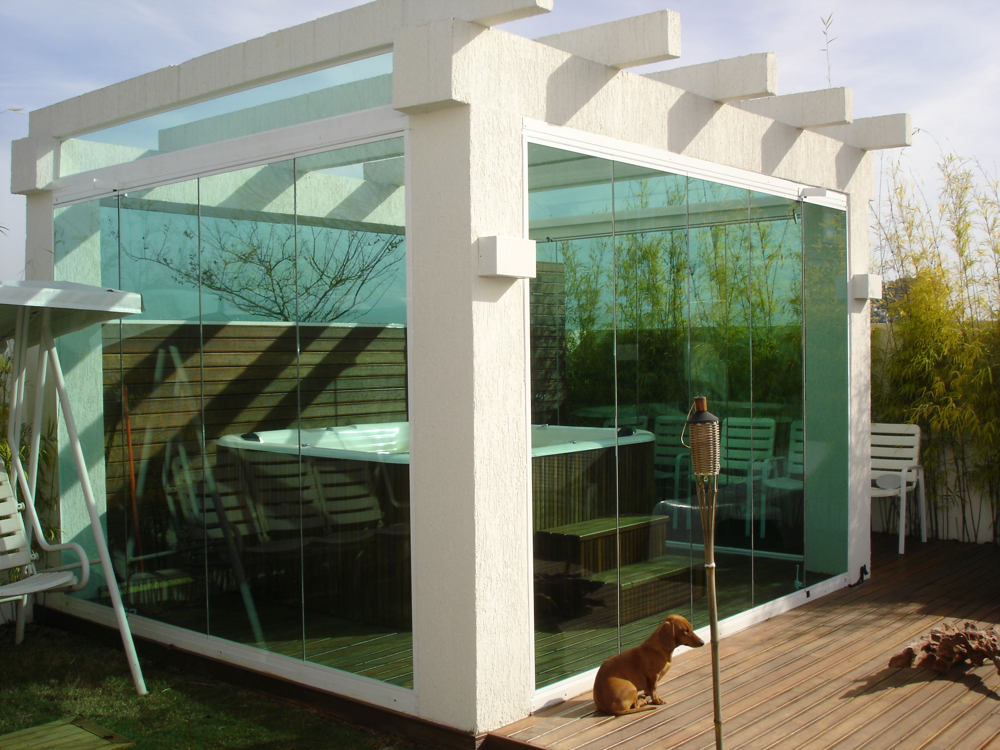

A Vitra Max une engenharia de precisão, mão de obra altamente qualificada e parcerias com as duas maiores marcas de tecnologia em vidros do país: Balcony Brasil e Roll Door.
Fundada com a missão de elevar os padrões de acabamento e segurança no setor vidreiro da região de Balneário Camboriú, a Vitra Max se tornou sinônimo de excelência em fechamentos panorâmicos de sacadas e portas arquitetônicas.
Entendemos que uma sacada de frente para o mar ou em um arranha-céu exige muito mais do que vidro comum: exige cálculo de cargas de vento, fixações químicas estruturais e ferragens que suportem a agressividade da maresia sem travar.
Conversar com Nossa Diretoria Técnica
Projetos em total acordo com a NBR 16259 e emissão de ART assinada por responsável técnico habilitado.
Garantia contratual estendida com suporte técnico ágil e reposição imediata de peças originais.
Não terceirizamos instalações críticas. Nossos montadores são treinados periodicamente pelos fabricantes Balcony e Roll Door.
Nota máxima de 5.0 estrelas no Google com avaliações espontâneas de clientes satisfeitos em todo o litoral.